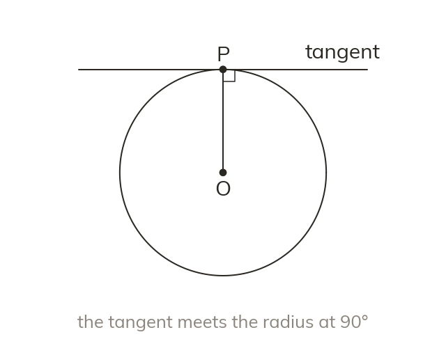

The tangent-radius right angle
A tangent touches a circle at exactly one point. It meets the radius there at 90°.
A tangent touches a circle at exactly one point, and meets the radius drawn to that point at exactly 90°. This is a new right angle to add to a diagram, and often the start of a Pythagoras problem.